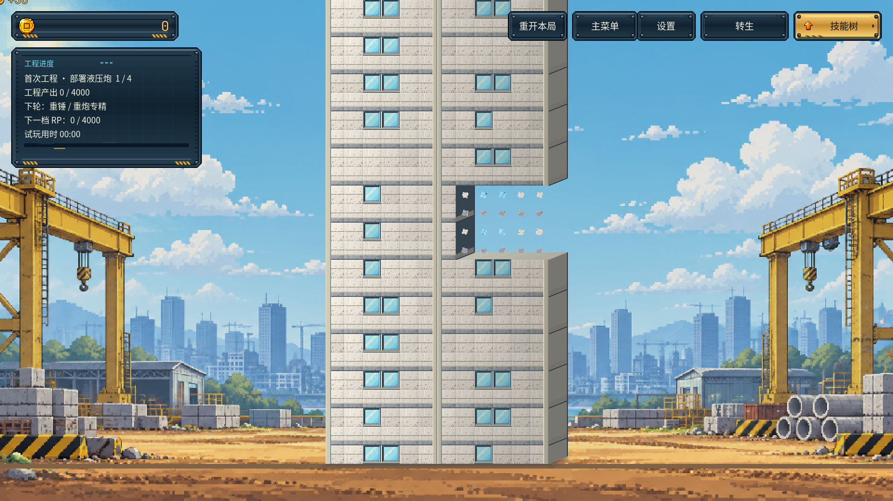

Boomame · 楼体立体感
拖动分界线对比同一场景。右侧窄侧面、整栋受光、固定窗带与薄楼板；断面随真实方块破坏和塌落。

 优化前优化后
优化前优化后体积 40px 窄侧面 / 右侧暗部立面 连续边柱 / 固定窗带断面 暗色内壁 / 楼板厚度
图像来自 Godot 4.7.2 的实际渲染；没有修改截图的颜色。场景使用相同初始种子；窗位重排改变后续随机序列，纹理细节、HUD 动画和物理抓帧时刻可能略有差异。四炮与材质档位通过独立测试存档加速展示，不代表自然游玩节奏。
真实缺口与断面
暂停在真实破坏发生后，观察暗色内壁、顶部断面和被拆掉的侧墙；恢复后按原有逐列算法塌落补齐。

2.5D 实机演示
录像演示锤击、脚本触发的真实局部破坏、塌落补齐、炮台部署与自动轰炸。测试使用独立用户目录，未修改玩家存档。